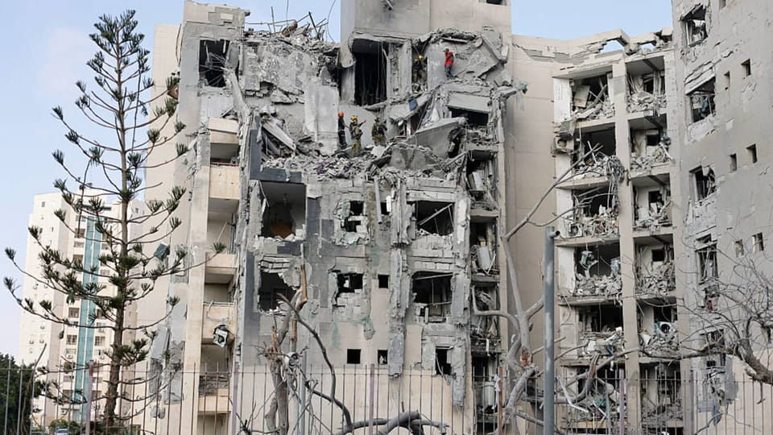

世界苦茶06月24日新闻 | 39条 | 伊朗以色列可能完成停火

伊朗以色列可能完成停火 | 土地财政降至2015年来最低 | 台湾驱离中国海警船 | 赖清德发起"团结国家十讲"动员大罢免 | 华为新笔记本电脑似乎显示芯片停滞 | 普京将罕见访华4日
每天三件事
苦茶数据
美元兑人民币：7.17（昨日7.18，前日7.18）
美元兑日元：145.45（昨日145.67，前日145.92）
上证指数：3417（昨日3365，前日3359）
标普500指数：6025（昨日5967，前日5980）
比特币：105429（昨日101253，前日102455）
布伦特原油：69.26（昨日78.15，前日77.01）
以伊战争
• 中方组织公民撤离中东 ：中国官方公布，已有超过3100名中国公民从伊朗安全撤离，中国使馆也协助组织500余名中国公民安全离开以色列。中国外交部发言人郭嘉昆星期一在例行记者会上说，在外交部、中国驻伊朗等国家使领馆以及交通运输部、民航局等部门共同努力下，3125名中国公民已从伊朗安全撤离。他们之中有10个月大的婴儿，有古稀之年的老人，还有香港和台湾居民。郭嘉昆公布，在伊朗有撤离意愿的中国公民均已撤离至安全地区，中国政府大规模有组织撤离在伊人员工作已完成。
• 特朗普言论搅乱官方口径 ：美国总统特朗普的国家安全高官在美军对伊朗三个关键核设施发动突袭后，极力强调此举不是要让伊朗出现政权更迭，只是要终结伊朗的核武计划，但特朗普随后却与他的高官们唱反调，发出混淆信息。美国政治新闻网站Politico星期天傍晚报道，特朗普在社媒平台Truth Social写道：“使用‘政权更迭’是政治不正确的，但如果伊朗现有政权无法让伊朗再次伟大，为什么不进行政权更迭？MIGA！！！”虽然特朗普没有呼吁推翻伊朗政权，也没有说美国将在推翻伊朗政权的过程中扮演任何角色，但他在Truth Social的贴文削弱了他的高官们看似协调一致的讲话。美国副总统万斯、国务卿鲁比奥、国防部长赫格塞斯等星期天早些时候均坚称，美国星期六的“午夜重锤”行动旨在摧毁伊朗发展核武器的能力。
• 英法德联合促伊保持克制 ：英国、法国及德国领导人敦促伊朗不要采取任何进一步破坏地区稳定的行动。路透社报道，英国首相斯塔默、法国总统马克龙和德国总理默茨星期天在一份联合声明中强调：“我们一直明确表示，伊朗绝不能拥有核武器，也绝不能对地区安全构成威胁。我们将继续共同努力缓解紧张局势，确保冲突不会进一步加剧和蔓延。”三国首脑也确认对以色列安全的支持。
• 美军炸福尔多未全摧毁 ：一名不愿具名的美国高级官员承认，美国B-2轰炸机在伊朗福尔多核设施投下的巨型钻地弹并未彻底摧毁这座戒备森严的核设施，只是造成严重破坏。《纽约时报》星期天报道，两名知情的以色列官员透露，以色列军方初步分析认为，福尔多核设施在美军突袭中遭受严重破坏，但尚未完全被摧毁。他们还表示，在美军袭击前，伊朗似乎已将包括浓缩铀在内的设备从福尔多核设施移走。一名美国高级官员承认，美军空袭并未摧毁福尔多核设施，但已造成严重破坏。这名官员指出，即使12枚巨型钻地弹也无法摧毁这座核设施。
• 伊朗导弹袭美空军基地 ：伊朗星期一对美国在中东最大的空军基地发射导弹，报复美国两天前袭击伊朗的三个关键核设施。美国总统特朗普证实，伊朗对美国位于卡塔尔的乌代德空军基地发射导弹，并指伊方提前通知了美方，袭击未造成人员伤亡。《纽约时报》报道，美国国防部官员说，美国驻卡塔尔的防空系统拦截了13枚伊朗导弹，另有一枚导弹落入境内，未造成任何伤害或破坏。一名美国官员说，驻伊拉克和叙利亚的美军仍然保持戒备，以防伊朗支持的民兵组织发动袭击。伊朗在发射导弹前通知美方，看似为避免美国做出回应。有迹象表明伊朗正在寻求避免与美国对抗，三名伊朗官员说，伊朗政府发动袭击前就提前通知美方，以尽量减少潜在伤亡。
• 以色列称冲突将结束 ：以色列第12频道电视台星期一晚间报道，以色列已向伊朗发出信息，称以方目标是“几天内”结束双方之间的军事冲突。报道引述以色列高级官员的话说，以色列“已接近实现作战目标”，但以色列仍可以选择升级战事，包括袭击伊朗数千个目标，以削弱伊朗政权。报道没有提及以色列通过何种渠道向伊朗发出上述消息。
• 特朗普宣布以伊停火 ：美国总统特朗普在社交媒体上说，以色列和伊朗已就“全面彻底停火”达成一致。综合路透社和新华社报道，特朗普在星期一傍晚6时02分（新加坡时间24日清晨6时02分）发表的贴文中说，停火将在大约六小时后正式生效，届时以伊双方将完成各自正在进行的“最后任务”。特朗普在社媒平台Truth Social写道：“假设一切进展顺利，事实上确实是如此，我要祝贺以色列和伊朗两国，拥有足够的毅力、勇气和智慧来结束这场应被称为‘十二日战争’的战争。”
• 伊朗外长阿拉格齐6月24日说，尚未达成任何关于停火或停止军事行动的“协议”： 关于停止军事行动的最终决定将在稍后作出。阿拉格齐还说：“只要以色列政权在德黑兰时间凌晨4时前停止对伊朗人的非法侵略，我们无意在此后继续采取反击行动。”阿拉格齐稍晚再次发文，感谢伊朗武装部队对以色列的军事行动一直持续到最后一刻，即凌晨4时。该描述似乎暗示敌对行动可能已经结束。与此同时，以色列24日早些时候对伊朗首都德黑兰多地发动多次袭击。 （翻评：感觉应该是结束了。）
• 中方回应伊朗或封海峡 ：针对报道称伊朗议会赞成关闭霍尔木兹海峡，中国外交部星期一呼吁国际社会推动冲突降级，防止地区局势动荡对全球经济发展造成更大的影响。中国外交部发言人郭嘉昆星期一主持例行记者会。会上有记者提问，“据报道，伊朗议会赞成关闭霍尔木兹海峡，但最终决定权在伊朗最高国家安全委员会手中，请问中方对此有何回应？是否已经与伊朗进行通话？”郭嘉昆回答，波斯湾及其附近水域是重要的国际货物和能源贸易通道，维护该地区安全稳定，符合国际社会的共同利益。
• 伊朗外长将会晤普京 ：伊朗外交部长阿拉格齐将与俄罗斯总统普京举行“重要”会谈，预料将谈论有关美国打击伊朗核设施的情况。法新社引述俄罗斯官方媒体报道，阿拉格齐星期一将赴俄罗斯与普京会谈。他说：“在这种新的危险局势下……我们与俄罗斯的磋商无疑至关重要。”伊朗伊斯兰共和国通讯社星期天报道称，阿拉格齐将与普京和其他高级官员就美国和以色列，对伊朗发动军事侵略后的地区和国际形势发展进行磋商。
• 外交部回应伊朗外长动向 ：面对伊朗外长是否会到中国的提问，中国外交部星期一在记者会上没有正面回应，仅称中国愿同伊朗及有关各方继续保持沟通，为推动局势的缓和发挥建设性的作用。中国外交部发言人郭嘉昆星期一主持例行记者会。有记者提问，据消息称，伊朗外长已经抵达莫斯科，将进行一系列会谈，并将会见俄罗斯总统普京。接下来伊朗外长是否会来中国，中方是否有消息可以提供？郭嘉昆回应，关于中伊之间的沟通，中国愿同伊朗及有关各方继续保持沟通，为推动局势的缓和发挥建设性的作用。 （翻评：中国这次太尴尬了，之前又是促成伊朗沙特世纪调停，又和海合会合作，又是每年通过石油疯狂输血伊朗，结果这次出事儿，伊朗还是直接去俄罗斯，俄罗斯对中东的影响似乎还是大于中国，中国是个非常边缘的角色。）
中国新闻
• 拟修法遏止平台内卷竞争 ：中国官方将修法，以完善治理平台的“内卷式”竞争。综合《南方都市报》和第一财经报道，中国全国人大常委会法工委发言人黄海华星期一在全国人大常委会法制工作委员会记者会上介绍，反不正当竞争法修订草案将提交本月召开的全国人大常委会会议二次审议，修订草案增加关于公平竞争审查制度的规定，修改完善治理平台“内卷式”竞争方面的规定。黄海华称，修订草案还包括修改完善反不正当竞争工作协调机制相关规定，明确市场监管部门的反不正当竞争工作职责；完善平台经营者处置平台内经营者不正当竞争行为的义务。 （翻评：非法治国家， 立法没有很大意义。）
• 李强将出席达沃斯论坛 ：中国总理李强将于星期二至星期三出席在天津举行的夏季达沃斯论坛。中国外交部星期一在官网宣布这项讯息时说，李强将出席开幕式并发表特别致辞，会见赴华出席论坛的外方嘉宾，并同外国工商界代表座谈交流。中国外交部发言人郭嘉昆同日在例行记者会上，回答关于中国对此次论坛有何期待的问题时说，当前世界经济增长乏力，单边主义、保护主义上升，严重冲击多边贸易体制。在此背景下，本届论坛报名与会的嘉宾人数创近年新高，再次表明各方维护经济全球化和自由贸易体制的共同意愿，以及对同中国加强经贸交流合作的积极态度。
• 民警未扶跌倒老人被免职 ：中国河南省周口市太康县发生老人水中摔倒、民警在旁未搀扶事件，涉事民警已被免职。综合现代快报、九派新闻报道，太康县王集乡葛岗村的老人家属冯先生称，6月19日下午，因家中淹水，他的父母在向外转移时，父亲不慎摔倒水中，现场民警未上前搀扶。冯先生表示，自己长期在外地打工，只有80多岁的父母在家里，“看到老人有危险了，你起码要过去搀扶一下，但他们无动于衷。”最终是在附近其他邻居的协助下，两位老人得以安全转移。
• 北京高温预警限户外活动 ：北京市教育委员会公告，北京已发布高温橙色预警，呼吁幼儿园、中小学等减少户外活动。北京市教委星期一在官方微信公众号“首都教育”上公告，北京市气象台当天发布高温橙色预警信号，预计6月23日至24日，每日中午12时至傍晚6时，北京市平原大部分地区最高气温将达到38摄氏度左右。北京市教委吁请各单位全面做好应对准备工作，幼儿园、中小学和中等职业学校减少当日高温时段室外体育课程、军事训练和户外活动。全面排查学生宿舍、教室空调等设备，采取有效措施降低宿舍、教室温度，增加室内通风；保证充足的饮水供应和饮用水安全，严格落实食品安全制度，防止发生食物中毒事件。如遇突发情况，要及时报告。
• 重庆市委书记访问德国 ：中共重庆市委书记袁家军率中共代表团访问德国，除了与德国总理府部长弗赖会面，他还会见西门子公司、梅赛德斯-奔驰集团负责人等工商界人士。据新华社报道，应德国社民党邀请，袁家军率中共代表团于上星期四至星期天访德。
• 武大毕业典礼垃圾惹议 ：中国知名大学武汉大学据报上周举行毕业典礼后，在活动现场留下不少垃圾，引发网民批评“这是素质教育的缺失”。据澎湃新闻星期天报道，武汉大学2025年毕业典礼上星期五上午在该校的九一二体育场举行。报道引述网民“珞珈山丽丽”发布的武汉大学现场画面称，体育场地面上留下了大量疑似塑料袋、一次性雨衣等白色垃圾。澎湃新闻引述武汉大学多名教职员工称，典礼当天下雨，所以不少教师和学生都穿上一次性雨衣；他们也承认仪式结束后有一些雨衣丢弃在现场，网民拍到的也是当时的情况，但强调丢弃的垃圾很快就被清理了。
• 台驱离大陆海警船 ：台湾海洋委员会海巡署通报，中国大陆海警船驶入东沙限制水域，该署派遣舰艇予以驱离。台湾海巡署星期天在官网通报，该署上星期六上午6时侦测到中国大陆海警船3302航入东沙西北西方限制水域后，立即调派东沙任务舰巡护七号全程并航监控，持续广播警告驱离。海巡署称，还另调派云林舰支援应处，在星期天上午6时10分将中国大陆海警船3302驱离至东沙西北方限制水域外，该船以航向291，航速13.9节，往外航离东沙水域。
亚太印太新闻
• 赖清德称台湾是国家 ：台湾总统赖清德启动“团结国家十讲”，星期天发表以“国家”为主题的第一讲，指中国大陆扭曲联合国大会第2758号决议文声称拥有台湾主权的说法大错特错，并从国家的定义角度表明“台湾当然是一个国家”。台湾总统府在官网公布，赖清德称，“台湾的国家主权属于2300万人民，我国的主权与治权就是台澎金马”，并说《旧金山和约》并未把台湾交给中华人民共和国，中华人民共和国从未统治过台湾任何一天。赖清德强调，面对中国大陆文攻武吓及五大国安统战威胁，台湾将勇敢面对。这五大国安统战威胁为“中国对国家主权之威胁”、中国大陆对台军的渗透及间谍活动的威胁、中国大陆混淆台湾民众对国家认同的威胁、中国大陆借两岸交流对台湾社会统战渗透的威胁，以及中国大陆借融合发展吸引台商、台青的威胁。
• 黄国昌批赖清德空话 ：针对台湾总统赖清德启动“团结国家十讲”，并发表首场以“国家”为主题的演说，民众党主席黄国昌批评其内容空洞，并呼吁赖清德“与其讲十遍空话，不如认真好好做一件实事”。综合台湾《联合报》《太报》报道，黄国昌星期一受访时说，对于赖清德启动的“团结国家十讲”，民众党虽然不认同赖清德单方面宣讲、不回应民众关切议题的做法，但仍以最大的诚意，全程聆听了赖清德的演说。他续称，自己与秘书长等人一同观看后感到十分震惊，无法想象赖清德竟发表如此空洞的演讲，“从盘古开天讲起，完全不知所云，他要表达的重点到底是什么？”
• 泰国内阁改组应对危机 ：泰国与柬埔寨关系持续紧张，泰国政府将在本周推进内阁改组，尝试顶住外界对政府的强烈反弹。路透社报道，泰国副首相蓬探星期一说：“我百分之百有信心，在本周完成内阁改组后，我们将坚定地继续前进，大家会看到一种不同于以往的工作方式。”泰国首相佩通坦与柬埔寨前首相洪森的通话录音上周外泄后引发轩然大波，原为执政联盟第二大党的泰自豪党宣布退出，使联合政府失去国会多数席位，也令佩通坦的首相职位岌岌可危。
• 菲副总统批总统亲美政策 ：菲律宾副总统莎拉说，菲律宾与中美紧张关系无关联，并点名批评总统小马可斯因允许美国在菲律宾领土部署导弹系统而激怒北京。彭博社报道，莎拉星期天在澳大利亚墨尔本进行直播演说时告诉她的支持者：“你们没有理由向美国靠拢。”她说，马尼拉和北京在南中国海的紧张关系并不是菲中关系的全部。 （翻评：杜特尔特家族是亲中派。）
• 韩国清算风暴再起 ：随着李在明政府强势启动“三大特别检察”，韩国政坛再度掀起“清算风暴”。过去八年，因总统弹劾引发的韩国政权更替已两度上演——2017年，文在寅接替因“闺蜜干政”丑闻下台的朴槿惠；2025年，李在明则因尹锡悦紧急戒严风波被罢免后上台。两位保守派总统接连下台，改革阵营重返执政，权力更替周期也由十年一轮压缩至三到五年，引发政策断裂与政治报复的反复循环。历届改革派上台，首要课题几乎都指向“清除前政权痕迹”。文在寅政府执政初期，即以“清除积弊”为旗帜，集中查处朴槿惠政府黑名单、权力私有化等问题。检察系统成为清算先锋，尹锡悦任检察官时被破格提拔，主导查办前总统李明博、朴槿惠及其亲信，司法、文化界亦受波及，引发巨大社会争议。
科技新闻
• 三企联手进军无人出租车 ：中国三家企业哈啰、蚂蚁集团和宁德时代联手进军中国无人驾驶德士服务市场。综合财联社和澎湃新闻报道，由哈啰、蚂蚁集团、宁德时代通过旗下投资主体共同发起成立的上海造父智能科技有限公司星期一在上海注册，公司注册资金12亿8800万元人民币，将专注于L4级自动驾驶技术研发、安全应用和商业化落地。据介绍，新公司由上海云玚企业管理咨询有限公司、上海钧哈网络科技有限公司、宁波梅山保税港区问鼎投资有限公司共同持股，三方首期合计出资超过30亿元。
• DeepSeek被指涉军情支持 ：路透社星期一引述一位美国高级官员说，深度求索正在协助中国的军事和情报行动，并补充称这家中国科技初创企业试图利用东南亚空壳公司，获取那些美国规定下不能运往中国的高端半导体。美国国务院一位不具名的高级官员说：“我们了解到，DeepSeek愿意为中国的军事和情报行动提供支持，并且很可能会继续这么做。 （翻评：DeepSeek不涉及军事领域和情报，我才会觉得奇怪。）
• 华为新笔记本电脑进一步证明芯片进展停滞： 华为最新电脑产品采用的是使用多年前的技术制造的芯片，这表明美国的制裁仍在阻碍中国发展尖端半导体技术。据加拿大咨询公司 TechInsights 称，MateBook Fold 的处理器采用国内合作伙伴中芯国际的七纳米技术制造，使用的是与 Mate 60 Pro 相同的工艺技术。华为于五月发布了新款可折叠笔记本和平板电脑混合产品。TechInsights说：“这很可能意味着中芯国际尚未实现可规模生产的五纳米等效节点。
财经新闻
• 中国拟修法推动低空经济 ：中国计划修订民用航空法，建立适应低空经济发展要求的适航审定、飞行管理等制度和标准等，进一步促进低空经济发展。综合中新社和澎湃新闻报道，民用航空法修订草案二审稿即将提请十四届全国人大常委会第十六次会议审议。中国全国人大常委会法工委发言人黄海华星期一在记者会上说，今年2月，十四届全国人大常委会对民用航空法修订草案进行了初次审议，其中拟要求充实促进民用航空事业发展的举措，特别是促进民用航空制造业、低空经济发展的内容。
• 高瓴拟收购星巴克中国 ：亚洲最大私募基金高瓴资本据报计划收购星巴克中国业务。综合财联社和第一财经星期一报道，知情人士透露，高瓴资本近日参与了星巴克中国区的反向管理层路演，表达了对收购星巴克中国业务的兴趣。这次路演还吸引了凯雷投资、信宸资本等多家投资机构参与。南方财经网向高瓴资本内部人士求证，对方表示不予置评。
• 土地收入下降财政承压 ：中国土地出让收入跌至十年来的最低水平，导致政府加大支出以支持经济发展，预算赤字从而进一步扩大。彭博社根据中国财政部上周五公布的数据计算得出，中国上个月的土地出让收入同比下降14.6%至1941亿元人民币，为2015年5月以来的最低水平。这导致政府总收入下降，今年前五个月政府总收入达到11.2万亿元人民币。
• 杭州公积金可直接付首付 ：中国杭州市官方通报，购房者本人可用公积金在杭州支付买新房首付款。杭州市政府新闻办星期一在官方微信公众号“杭州发布”通报，杭州住房公积金管理中心推出住房公积金直付购房首付款业务，缴存职工在杭州市购买的新建商品房，可使用公积金直接直付购房首付款，且全程支持线上办理。二手房线上办理功能正在开发中，近期也将推出。根据通报，缴存职工先查询公积金账户内可用余额，在签订购房网签合同前，向商品房开发商提出使用住房公积金直付购房首付款的需求。之后，开发商录入网签合同信息，确定采用公积金首付支付首付款方式。
• 小米首款SUV将发布 ：中国科技巨头小米的创始人雷军说，小米首款运动型多用途车将在星期四正式发布。雷军星期一在微博发文说，小米首款SUV“小米YU7”，将于星期四晚上7时正式发布。同一时间发布的新品还包括小折叠手机Xiaomi Flip2、搭载玄戒O1旗舰晶片的小米平板7S Pro等。雷军说：“这次新品比较多，时间比较长，请大家提前做好准备。”
• 特朗普称敦促各方压低油价，担心伊朗遭袭后油价飙升 ：美国总统特朗普表示希望油价保持在低位，因为担心伊朗核设施遭袭的后果可能导致油价飙升。“各位，把油价压下去，我在看着呢！你们这是在帮敌人的忙，别这么做。”特朗普在他的“Truth Social”平台上用大写字母写道。汇丰控股表示，预计布兰特油价将升至每桶80美元以上，这是因为霍尔木兹海峡关闭的可能性较高；但如果供应中断的威胁没有出现，油价将再次回落。
• 日本正式对中国石墨电极加征95%关税： 日本财务省20日决定对中国产石墨电极征收反倾销关税。从7月3日起，为期五年，加征95.2%的关税。日本自3月起暂时征收这项关税，根据追加调查的结果，决定转为正式措施。这项措施在 6月20日召开的关税及外汇等审议会的部会上获得批准。石墨电极主要用通过电流产生热量来熔化铁屑的电炉的电极。由于日本国内厂商提出意见，日本政府对中国的倾销行为进行了调查。
• 美团优选被曝突发大面积关仓： 6月23日 午间消息，有用户反映，美团优选小程序目前无法下单，系统提示为“由于业务局部调整，您所在的区域自 6月23日起将暂停接单。”有消费者在网络社交平台表示，今天早上美团优选突然全国大面积关仓，只有广东部分城市保留业务。今天，美团宣布全面拓展即时零售业务，推动零售新业态提质升级，其中提到，美团优选将进一步利用已建设的供应链及仓配网络，集中资源聚焦优势区域，继续探索“次日达+自提”模式和社区零售新业态。同时，深耕生鲜食杂供应链。
俄乌战争
• 普京计划罕见访华四日 ：俄罗斯总统助理乌沙科夫受访时说，俄罗斯总统普京将在中国进行为期四天的访问，并形容为期数天的出访行程，对普京来说很罕见。据塔斯社星期天报道，乌沙科夫接受俄罗斯国家电视台采访时，作出上述表示。当被问及此次普京访华，是否确定会从8月31日到9月3日时，乌沙科夫回答：“嗯，是的……那里中国计划举办几项活动。”
• 石破茂取消赴北约峰会 ：基于“各种情况”，日本首相石破茂取消本周前往海牙出席北约峰会的计划。路透社报道，日本外务省星期一发声明称，石破茂决定取消6月24日至26日出席北约峰会的行程，但没有透露具体原因。外务省在声明中说，虽然石破茂不会出席峰会，但日本外长岩屋毅将前往荷兰出席北约相关活动，并举行双边会晤。
国际新闻
• 众议院禁用WhatsApp ：美国众议院员工被禁止在当局配发的电子设备上使用社媒平台WhatsApp，以避免数据泄露的情况。美国新闻网Axios报道，当局星期一发送给众议院工作人员的一份备忘录显示，由于WhatsApp存在安全风险，众议院员工不得在政府配发的手机、电脑，甚至在网页浏览器上使用该应用。备忘录没有提及继续使用应用的后果，但明确指出被抓到的人将被要求立即删除该应用。
• 新西兰黄金签证申请激增 ：新西兰政府星期一说，自放宽申请条件以来，被称为”黄金签证”的新版投资移民签证申请数量激增。路透社报道，为了让海外高净值人士通过投资更快取得新西兰的居留权，新西兰政府今年4月宣布放宽投资移民签证规则，包括将专注于高风险投资类别的最低资金要求从1500万新西兰元降至500万新西兰元，并取消了对英语能力的要求。新西兰移民部长斯坦福说，新西兰在不到三个月内就收到189份“活跃投资者+”的签证申请，其中85份申请来自美国公民，中国内地和香港分别以26份和24份排在第二和第三位。
• 法国各地音乐节上近150人遭注射器刺伤，警方逮捕12人： 据悉，在法国各地举行的一场热门音乐节上，近150人报告被注射器刺伤。在法国一年一度的音乐节期间，狂欢者称他们被注射器刺伤，其中13人在巴黎，警方逮捕了12名嫌疑人。音乐节吸引了全国各地的人群，数百万人走上街头庆祝夏季的到来，导致巴黎街道人头攒动。